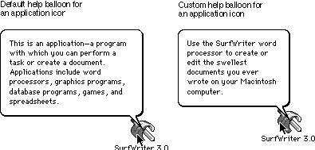

Legacy Document
Important: The information in this document is obsolete and should not be used for new development.
Important: The information in this document is obsolete and should not be used for new development.


Overriding Help Balloons for Non-Document Icons
The Finder displays default help balloons for all icon types. By specifying an'hfdr'resource in your application's resource fork, you can provide your own help balloon for the Finder to display when the user moves the cursor over your non-document icons.
To override the Finder's default help balloons for your application icon, desk accessory icon, system extension icon, or control panel icon, create an
- Note
- BalloonWriter, available from APDA, is a tool that gives nonprogrammers an easy way to create help balloons for most of the icons that the Finder displays for your software. BalloonWriter creates an
'hfdr'resource and places it in the resource fork of the file represented by the icon; BalloonWriter likewise creates and stores an'STR 'resource that contains the help message.
'hfdr'resource in your resource file. As shown here, an'hfdr'resource consists of two components: a header component and an icon component. Use the icon component to specify a help message for your application's Finder icon.
Component Element Header Help Manager version Options Balloon definition function Variation code Icon Identifier for help message Help message for application icon
Use resource ID -5696 for your
- Note
- You cannot override the default help balloon that the Finder uses for document icons.
'hfdr'resource. If an'hfdr'resource with that ID exists for an application, the Help Manager uses it instead of the default help balloon supplied by the Finder.Specifying Header Information for the 'hfdr' Resource
As with the other help resources, specify theHelpMgrVersionconstant for the first element of the header component of the'hfdr'resource. For the second element, specify a constant (normally,hmDefaultOptions) or the sum of several constants' values from the following list. ("Specifying Options in Help Resources" beginning on page 3-22 describes these options.)
CONST hmDefaultOptions = 0; {use defaults} hmUseSubID = 1; {use subrange resource IDs } { for owned resources} hmAbsoluteCoords = 2; {ignore coords of window } { origin and treat upper-left } { corner of window as 0,0} hmSaveBitsNoWindow = 4; {don't create window; save } { bits; no update event} hmSaveBitsWindow = 8; {save bits behind window } { and generate update event}Specify the balloon definition function and variation code (both typically 0) in the third and fourth elements, respectively, of the header component. (These are described in detail earlier in "Specifying Header Information for the 'hmnu' Resource" on page 3-29.)Specifying Help for an Icon
In the icon component, use the first element to specify the format that the help message takes. As with the other help resources, specify the format using one of these identifiers:HMStringItem,HMSTRResItem,HMStringResItem,HMPictItem,HMTEResItem, orHMSkipItem. These identifiers are described in "Specifying the Format for Help Messages" on page 3-21. (If you specifyHMSkipItem, no help balloon appears.)In the second element of the icon component, specify the help message. Your help message doesn't have to describe how to open icons; you can assume that users know how.
Figure 3-21 shows the default help balloon for application icons on the left. A custom help balloon for the same icon appears on the right.
Figure 3-21 Default and custom help balloons for an application icon
 The custom help balloon on the right side of Figure 3-21 is supplied with the resources shown in Listing 3-17.
Listing 3-17 Rez input for creating an
'hfdr'resource for an application icon
resource 'hfdr' (-5696) { /*help for SurfWriter icon*/ /*header component*/ HelpMgrVersion, hmDefaultOptions, 0, 0, { /*icon component*/ HMSTRResItem { /*use 'STR ' resource 1001*/ 1001 } } }; resource 'STR ' (1001) { /*help message for SurfWriter icon*/ "Use the SurfWriter word processor to wrote or edit the " "swellest documents you ever wrote on " "your Macintosh computer." };